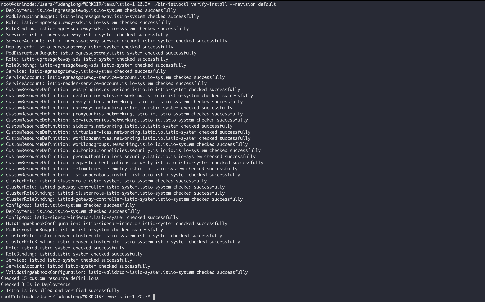

Istio 实践笔记
Istio 是服务网格，即ServiceMesh的一种实现，服务网格通常用于描述构成应用程序的网络以及它们之间的交互。在从单体应用向分布式微服务架构转型的过程中，虽然从中获益良多，但是随着规模和复杂性的增长，服务网格越来越难以理解，给开发人员和运维人员带来的挑战快速增加。这些挑战包括：服务发现，负载均衡，故障恢复，指标收集，监控以及一些更加复杂的运维需求，例如：A/B测试、金丝雀发布、限流、访问控制，端到端认证等。而 Istio 提供了一个完整的解决方案，通过为整个服务网格提供行为洞察和操作控制来满足微服务应用程序的多样化需求。
Istio 以非常简单的方式来为已部署的服务建立网络，对应用程序代码只需要进行一点或者不需要做任何改动，要想让服务支持Istio，只需要在应用旁边部署一个 sidecar 代理，使用 Istio 的控制面进行功能配置和管理代理，拦截服务之间的所有网络通信，已达到：
HTTP、gRPC、WebSocket和TCP流量的自动负载均衡；- 通过丰富的路由规则、重试、故障转移和故障注入，可以对流量行为进行细粒度控制；
- 可插入的策略层和配置 API，支持访问控制、速率限制和配额；
- 对出入集群入口和出口中所有流量的自动度量指标、日志记录和追踪；
- 通过强大的基于身份的验证和授权，在集群中实现安全的服务间通信；
综上，对 Istio 的核心功能可以总结为以下几点：
- 流量管理，通过简单的规则配置和流量路由，可以控制服务之间的流量和
API调用。Istio简化了断路器、超时和重试等服务级别属性的配置，并且可以轻松设置A/B测试、金丝雀部署和基于百分比的流量分割的分阶段部署等重要任务； - 安全，
Istio的安全功能使开发人员可以专注于应用程序级别的安全性。Istio提供底层安全通信信道，并大规模管理服务通信的认证、授权和加密。使用Istio，服务通信在默认情况下是安全的，它允许您跨多种协议和运行时一致地实施策略——所有这些都很少或根本不需要应用程序更改； - 可观察性，
Istio强大的追踪、监控和日志记录可让开发或者运维人员深入了解服务网格部署。通过Istio的监控功能，可以真正了解服务性能如何影响上游和下游的功能，而其自定义仪表板可以提供对所有服务性能的可视性；
在架构上，Istio 服务网格逻辑上分为数据平面和控制平面，其中：
- 数据平面由一组以
sidecar方式部署的智能代理（Envoy）组成。这些代理负责协调和控制微服务之间的所有网络通信。 它们还收集和报告所有网格流量的遥测数据； - 控制平面 管理并配置代理来进行流量路由；
架构图如下图所示：

Envoy：是用 C++ 开发的高性能代理，用于协调服务网格中所有服务的入站和出站流量。Envoy 代理是唯一与数据平面流量交互的 Istio 组件。Envoy 被部署为服务的 Sidecar，在逻辑上为服务增加了 Envoy 的许多内置特性，例如：动态服务发现，负载均衡，TLS 终端，HTTP/2 与 gRPC 代理，熔断器，健康检查，基于百分比流量分割的分阶段发布，故障注入，丰富的指标；
Sidecar 代理模型还允许您向现有的部署添加 Istio 功能，而不需要重新设计架构或重写代码。由 Envoy 代理启用的一些 Istio 的功能和任务包括：
- 流量控制功能：通过丰富的
HTTP、gRPC、WebSocket和TCP流量路由规则来执行细粒度的流量控制； - 网络弹性特性：重试设置、故障转移、熔断器和故障注入；
- 安全性和身份认证特性：执行安全性策略，并强制实行通过配置
API定义的访问控制和速率限制； - 基于
WebAssembly的可插拔扩展模型，允许通过自定义策略执行和生成网格流量的遥测；
Istiod 将控制流量行为的高级路由规则转换为 Envoy 特定的配置， 并在运行时将其传播给 Sidecar。Pilot 提取了特定平台的服务发现机制，并将其综合为一种标准格式，任何符合 Envoy API 的 Sidecar 都可以使用。以及通过内置的身份和凭证管理，实现了强大的服务对服务和终端用户认证，可以使用 Istio 来升级服务网格中未加密的流量，这样运营商可以基于服务身份而不是相对不稳定的第3层或第4层网络标识符来执行策略。Istiod 还可以充当证书授权（CA），生成证书以允许在数据平面中进行安全的 mTLS 通信。
安装
本节使用 istioctl 安装 istio，可以从发布页面下载预编译的版本，在安装的时候根据需要选择不同的配置，这里为了后续的演示和示例，选择 demo 配置项，这将会安装 istio-ingressgateway、istio-egressgateway 和 istiod：
istioctl install --set profile=demo
1 | $ ./bin/istioctl install --set profile=demo |
可以通过下面的命令查看安装到集群中的 istio 的配置：
kubectl -n istio-system get IstioOperator installed-state -o yaml
可以通过下面的命令验证在集群中安装的资源信息：
./bin/istioctl verify-install --revision default

查看安装的 Pod、SVC 以及 Deploy 这些关键资源：
kubectl get svc,pod,deploy -n istio-system -owide
功能介绍
接下来使用 istio 发布件中的 bookinfo 应用来演示 istio 的各项功能，首先是安装该应用，使用如下的步骤进行安装，：
1 | $ kubectl create ns bookinfo-test |
上面最重要的流程是给 bookinfo-test 命名空间添加了 istio-injection=enabled 标签，这样 istio 会为这个命名空间中的 pod 自动注入 istio-proxy 这个 Sidecar 容器。
创建网关
这里有多种方式作为入口流量的网关，可以使用 Istio Gateway、K8S Gateway 以及 K8S Ingress，要注意的是 Istio Gateway 和 K8S Gateway 虽然资源名称是一样的，都叫 Gateway，但是它们在使用方式是完全不一样的，下面的示例中以 Istio Gateway 为示例进行。创建用于 bookinfo 应用的网关使用如下的命令：
kubectl apply -n bookinfo-test -f samples/bookinfo/networking/bookinfo-gateway.yaml
该 yaml 文件中的内容如下：
1 | apiVersion: networking.istio.io/v1alpha3 |
上面的 yaml 中，Gateway 的 API 版本是 networking.istio.io/v1alpha3，这和 K8S Gateway 是完全不一样的，所以他们是两个完全不一样的资源。Gateway 中的 spec.selector 使用选择使用哪个 Pod 来处理该网关的请求，这里选择的是安装章节中在 istio-system 命名空间中创建的 pod/istio-ingressgateway-86446666f9-qn4f2，该 Pod 具有标签 istio=ingressgateway：
kubectl describe pod -n istio-system stio-ingressgateway-86446666f9-tgmrp
而 Gateway 中的端口 8080 匹配的到 pod/istio-ingressgateway-86446666f9-qn4f2 中暴露的端口 8080。集群的流量入口是从绑定到pod/istio-ingressgateway-86446666f9-qn4f2的service/istio-ingressgateway流入，然后根据 Gateway 所绑定的端口和配置将流量导入到最终的业务 Pod 中：
kubectl describe svc -n istio-system istio-ingressgateway
istio-ingressgateway 的外部IP是 192.168.67.241，对于 bookinfo-gateway 流量从 192.168.67.241:80 进入，然后转发到 10.244.2.19:8080，再根据 Gateway 和 VirtualService 的配置分发流量，VirtualService 就像 K8S Gateway 中的路由，可以根据具体的匹配条件将流量分发到不同的应用。上面简单介绍了网关的概念和入口流量的处理流程，创建成功之后能够得到下面的资源：
1 | $ kubectl get gateway,virtualservice -n bookinfo-test -owide |
在上面的流程分析中，其实已经得到网关入口的地址。也可以使用下面的命令进行获取，如果环境中安装了 MetaLB，也就是 service/istio-ingressgateway 有 External-IP 的时候使用下面的方式：
1 | $ kubectl -n istio-system get service istio-ingressgateway -o jsonpath='{.status.loadBalancer.ingress[0].ip}' |
所以可以使用 http://192.168.67.241/productpage 访问应用。如果没有安装 MetaLB，也可以使用节点的公网IP和service/istio-ingressgateway的NodePort进行访问，如下也可以使用 http://192.168.67.8:30298/productpage 端口进行访问：
1 | $ ifconfig enp0s1 |
流量观测
为了能直观地看到上述服务中的流量转发情况，安装kiali和prometheus进行演示：
kubectl apply -f https://raw.githubusercontent.com/istio/istio/release-1.20/samples/addons/kiali.yaml
kubectl apply -f https://raw.githubusercontent.com/istio/istio/release-1.20/samples/addons/prometheus.yaml
安装成功之后，可以看到如下的 Service：
kiali 默认是 ClusterIP 类型的，没法直接从外部进行访问，实验环境下可以将它改成NodePort或者LoadBlancer类型，这样就获得了从外部访问的入口。也可以通过下面的命令临时获得公网入口，172.19.106.26 是节点公网地址：
1 | $ ./bin/istioctl dashboard kiali --address 172.19.106.26 |
刷新 productpage 页面几次，然后在 kiali 页面看到如下的请求示意图：
目标规则
在刷新产品页面的时候，会发现书籍的星级评分有时候有，有时候是红色的，有时候是黑色的，是因为服务的 reviews 的版本有三个，请求到不同的 pod 就会出现不同的结果：
目标规则的意思就是将这些相同服务但不同版本以显示的方式指定，然后可以供 VirtualService 在转发流量是进行选择，在继续后面的章节之前，先应用默认的路由规则：
kubectl apply -n bookinfo-test -f samples/bookinfo/networking/destination-rule-all.yaml
在 destination-rule-all.yaml 有一些用于后续实验的规则，挑其中一个进行说明：
1 | apiVersion: networking.istio.io/v1alpha3 |
这里的 host 指的是服务的名称，subsets 用来声明这个服务内在的版本，这里指定了三个版本v1、v2和v3，分别用三个标签指向3个reviews的Pod。
流量管理
Istio 的流量管理功能可以体现在路由版本分发，故障注入，流量转移，请求设置超时，熔断，地域负载均衡等过个方面。
路由版本分发
本节继续基于前面的测试，将路由分发到具体的版本，例如，在这之前，刷新产品页面数据的评论信息一直在变动，这里通过简单的配置让他们都访问 v1 版本：
1 | $ kubectl apply -n bookinfo-test -f samples/bookinfo/networking/virtual-service-all-v1.yaml |
virtual-service-all-v1.yaml 中的内容如下，拿 reviews 这个 VirtualService 的配置来说，它会让所有访问 reviews 服务的请求都转发到 v1 版本：
1 | apiVersion: networking.istio.io/v1alpha3 |
此时如果再去刷新产品页面，评论信息是不会再有所变动的。还可以匹配具体的HTTP头信息，让具有某个请求头的用户访问某个版本。例如，更新刚才创建的review VirtualService，让用户jason访问 v2版本：
kubectl apply -n bookinfo-test -f samples/bookinfo/networking/virtual-service-reviews-test-v2.yaml
1 | apiVersion: networking.istio.io/v1alpha3 |
使用jason登录，密码任意，然后发现不管怎么刷新页面，书籍的评论都是固定的黑色星级样式。截止到目前，请求的流程如下所示：
productpage→reviews:v2→ratings(针对jason用户)productpage→reviews:v1(其他用户)
故障注入
故障注入可以分为延迟故障和abort故障。例如，针对下面的测试，在jason用户在访问ratings服务时，会引入1个7s的延迟：
kubectl apply -n bookinfo-test -f samples/bookinfo/networking/virtual-service-ratings-test-delay.yaml
1 | apiVersion: networking.istio.io/v1alpha3 |
如下在jason用户在访问ratings服务时，引入500响应，此时访问产品页，在评论的地方会出现 Ratings service is currently unavailable 这样的信息：
kubectl apply -n bookinfo-test -f samples/bookinfo/networking/virtual-service-ratings-test-abort.yaml
1 | apiVersion: networking.istio.io/v1alpha3 |
清除本节注入的故障:
kubectl delete -n bookinfo-test -f samples/bookinfo/networking/virtual-service-ratings-test-delay.yaml
kubectl delete -n bookinfo-test -f samples/bookinfo/networking/virtual-service-ratings-test-abort.yaml
流量转移
流量转移通常用于版本升级过程中新版本不完全可信的时候，可以只将少部分的流量转移到新版本进行测试，待测试通过之后，再讲全部的流量进行导入。为了验证，这里先讲所有的流量都恢复到所有应用的v1版本：
kubectl apply -n bookinfo-test -f samples/bookinfo/networking/virtual-service-all-v1.yaml
此时，假设对 reviews 应用进行了版本升级，要导入一部分流量进行测试，这里将导入50%的流量到reviews v3应用：
kubectl apply -n bookinfo-test -f samples/bookinfo/networking/virtual-service-reviews-50-v3.yaml
1 | apiVersion: networking.istio.io/v1alpha3 |
此时刷新产品页，应该有50%的几率看到红色的星级评价。如果测试完成，可以将全部流量导入到reviews v3：
kubectl apply -n bookinfo-test -f samples/bookinfo/networking/virtual-service-reviews-v3.yaml
1 | apiVersion: networking.istio.io/v1alpha3 |
请求超时
将所有对 reviews 的访问都路由到 v2 版本，并且设置对ratings的访问增加固定的2s延迟：
1 | kubectl apply -n bookinfo-test -f - <<EOF |
此时刷新产品页，页面响应正常，但是有2s延迟。现在设置对reviews的访问最大0.5s超时：
1 | kubectl apply -n bookinfo-test -f - <<EOF |
再去刷新页面，发现页面会在1s左右响应，但是评论获取失败。可以使用下面的命令将应用恢复到所有服务的v1版本：
kubectl apply -n bookinfo-test -f samples/bookinfo/networking/virtual-service-all-v1.yaml
TCP流量转移
在测试之前首先设置测试环境：
- 创建命名空间
kubectl create namespace istio-io-tcp-traffic-shifting- 部署 sleep 应用程序，作为请求的测试源
kubectl apply -f samples/sleep/sleep.yaml -n istio-io-tcp-traffic-shifting- 部署 tcp-echo 服务的 v1 和 v2 版本，作为服务端
kubectl apply -f samples/tcp-echo/tcp-echo-services.yaml -n istio-io-tcp-traffic-shifting
首先将所有流量路由到v1版本的tcp-echo，VirtualService 中根据端口进行匹配：
kubectl apply -f samples/tcp-echo/tcp-echo-all-v1.yaml -n istio-io-tcp-traffic-shifting
1 | apiVersion: networking.istio.io/v1alpha3 |
然后确定TCP流量的入口端口和IP，使用下面的命令进行获取：
1 | $ kubectl -n istio-system get service istio-ingressgateway -o jsonpath='{.status.loadBalancer.ingress[0].ip}' |
发送流量进行测试，响应都来自tcp-echo的v1版本（时间戳前面的one代表v1版本）:
1 | $ #获取客户端的Pod名称 |
接下来将20%的流量路由到v2版本：
kubectl apply -f samples/tcp-echo/tcp-echo-20-v2.yaml -n istio-io-tcp-traffic-shifting
1 | apiVersion: networking.istio.io/v1alpha3 |
然后再进行测试，发现有20%的响应带有two前缀：
1 | $ for i in {1..20}; do kubectl exec "$SLEEP" -c sleep -n istio-io-tcp-traffic-shifting -- sh -c "(date; sleep 1) | nc 172.19.106.241 31400"; done |
清理使用下面的命令：
kubectl delete ns --cascade istio-io-tcp-traffic-shifting
熔断
常见的服务容错措施包括，主动超时，限流，熔断，隔离，降级，其中熔断是指类似保险丝的保护措施，当某个异常情况出现时，切断前端服务和后端服务之间的链接，保护后端服务不受冲击。为了验证熔断场景的，首先做一些准备工作：
-
创建命名空间并且设定标签：
kubectl create ns circuit-breaking-test
kubectl label ns circuit-breaking-test istio-injection=enabled -
创建用于测试的服务端：
kubectl apply -n circuit-breaking-test -f samples/httpbin/httpbin.yaml -
配置熔断器，设置熔断规则，这里指定连接池的最大连接数是
1，最大等待等请求数是1，这意味着如果并发的连接和请求数超过一个，在istio-proxy进行进一步的请求和连接时，后续的请求或者连接都会被阻止：1
2
3
4
5
6
7
8
9
10
11
12
13
14
15
16
17
18
19
20kubectl apply -n circuit-breaking-test -f - <<EOF
apiVersion: networking.istio.io/v1alpha3
kind: DestinationRule
metadata:
name: httpbin
spec:
host: httpbin
trafficPolicy:
connectionPool:
tcp:
maxConnections: 1
http:
http1MaxPendingRequests: 1
maxRequestsPerConnection: 1
outlierDetection:
consecutive5xxErrors: 1
interval: 1s
baseEjectionTime: 3m
maxEjectionPercent: 100
EOF -
创建用于测试的客户端，这里使用fortio，它可以控制连接数、并发数及发送
HTTP请求的延迟，通过Fortio能够有效的触发前面在DestinationRule中设置的熔断策略：kubectl apply -n circuit-breaking-test -f samples/httpbin/sample-client/fortio-deploy.yaml -
进入
fortio客户端进行测试：1
2
3
4
5
6
7
8
9
10
11
12
13
14
15
16
17
18
19
20
21
22
23
24
25
26$ export FORTIO_POD=$(kubectl get pods -n circuit-breaking-test -l app=fortio -o 'jsonpath={.items[0].metadata.name}')
$ kubectl exec -n circuit-breaking-test "$FORTIO_POD" -c fortio -- /usr/bin/fortio curl -quiet http://httpbin:8000/get
HTTP/1.1 200 OK
server: envoy
date: Wed, 06 Mar 2024 02:55:28 GMT
content-type: application/json
content-length: 622
access-control-allow-origin: *
access-control-allow-credentials: true
x-envoy-upstream-service-time: 80
{
"args": {},
"headers": {
"Host": "httpbin:8000",
"User-Agent": "fortio.org/fortio-1.17.1",
"X-B3-Parentspanid": "c168ff86036a18bb",
"X-B3-Sampled": "1",
"X-B3-Spanid": "c65d056e678f9c31",
"X-B3-Traceid": "be3105420cdf261fc168ff86036a18bb",
"X-Envoy-Attempt-Count": "1",
"X-Forwarded-Client-Cert": "By=spiffe://cluster.local/ns/circuit-breaking-test/sa/httpbin;Hash=c690d3fd7f2a70f861c94b8ce5f68a773ae18a2df0dd9138a80627beb0926bec;Subject=\"\";URI=spiffe://cluster.local/ns/circuit-breaking-test/sa/default"
},
"origin": "127.0.0.6",
"url": "http://httpbin:8000/get"
} -
触发熔断规则，设置并发数
3，结果显示只有30%的请求成功：1
2
3
4
5
6
7
8
9
10
11
12
13
14
15
16
17
18
19
20
21
22
23
24
25
26
27
28
29
30
31$ kubectl exec -n circuit-breaking-test "$FORTIO_POD" -c fortio -- /usr/bin/fortio load -c 3 -qps 0 -n 30 -loglevel Warning http://httpbin:8000/get
02:57:22 I logger.go:127> Log level is now 3 Warning (was 2 Info)
Fortio 1.17.1 running at 0 queries per second, 12->12 procs, for 30 calls: http://httpbin:8000/get
Starting at max qps with 3 thread(s) [gomax 12] for exactly 30 calls (10 per thread + 0)
02:57:22 W http_client.go:806> [0] Non ok http code 503 (HTTP/1.1 503)
02:57:22 W http_client.go:806> [0] Non ok http code 503 (HTTP/1.1 503)
...
Ended after 34.5649ms : 30 calls. qps=867.93
Aggregated Function Time : count 30 avg 0.00283299 +/- 0.003602 min 0.0003805 max 0.0138029 sum 0.0849897
# range, mid point, percentile, count
>= 0.0003805 <= 0.001 , 0.00069025 , 36.67, 11
> 0.001 <= 0.002 , 0.0015 , 63.33, 8
> 0.002 <= 0.003 , 0.0025 , 70.00, 2
> 0.003 <= 0.004 , 0.0035 , 80.00, 3
> 0.004 <= 0.005 , 0.0045 , 86.67, 2
> 0.009 <= 0.01 , 0.0095 , 90.00, 1
> 0.01 <= 0.011 , 0.0105 , 93.33, 1
> 0.011 <= 0.012 , 0.0115 , 96.67, 1
> 0.012 <= 0.0138029 , 0.0129015 , 100.00, 1
# target 50% 0.0015
# target 75% 0.0035
# target 90% 0.01
# target 99% 0.013262
# target 99.9% 0.0137488
Sockets used: 23 (for perfect keepalive, would be 3)
Jitter: false
Code 200 : 9 (30.0 %)
Code 503 : 21 (70.0 %)
Response Header Sizes : count 30 avg 69.033333 +/- 105.5 min 0 max 231 sum 2071
Response Body/Total Sizes : count 30 avg 424.33333 +/- 280 min 241 max 853 sum 12730
All done 30 calls (plus 0 warmup) 2.833 ms avg, 867.9 qps -
查看
istio-proxy的状态以了解更多熔断的信息：kubectl exec -n circuit-breaking-test "$FORTIO_POD" -c istio-proxy -- pilot-agent request GET stats | grep httpbin | grep pending1
2
3
4
5
6
7
8
9
10
11
12
13
14
15
16
17
18
19
20
21
22$ kubectl exec -n circuit-breaking-test "$FORTIO_POD" -c istio-proxy -- pilot-agent request GET stats | grep httpbin | grep pending
cluster.outbound|15021||httpbin-gateway-istio.circuit-breaking-test.svc.cluster.local.circuit_breakers.default.remaining_pending: 4294967295
cluster.outbound|15021||httpbin-gateway-istio.circuit-breaking-test.svc.cluster.local.circuit_breakers.default.rq_pending_open: 0
cluster.outbound|15021||httpbin-gateway-istio.circuit-breaking-test.svc.cluster.local.circuit_breakers.high.rq_pending_open: 0
cluster.outbound|15021||httpbin-gateway-istio.circuit-breaking-test.svc.cluster.local.upstream_rq_pending_active: 0
cluster.outbound|15021||httpbin-gateway-istio.circuit-breaking-test.svc.cluster.local.upstream_rq_pending_failure_eject: 0
cluster.outbound|15021||httpbin-gateway-istio.circuit-breaking-test.svc.cluster.local.upstream_rq_pending_overflow: 0
cluster.outbound|15021||httpbin-gateway-istio.circuit-breaking-test.svc.cluster.local.upstream_rq_pending_total: 0
cluster.outbound|8000||httpbin.circuit-breaking-test.svc.cluster.local.circuit_breakers.default.remaining_pending: 1
cluster.outbound|8000||httpbin.circuit-breaking-test.svc.cluster.local.circuit_breakers.default.rq_pending_open: 0
cluster.outbound|8000||httpbin.circuit-breaking-test.svc.cluster.local.circuit_breakers.high.rq_pending_open: 0
cluster.outbound|8000||httpbin.circuit-breaking-test.svc.cluster.local.upstream_rq_pending_active: 0
cluster.outbound|8000||httpbin.circuit-breaking-test.svc.cluster.local.upstream_rq_pending_failure_eject: 0
cluster.outbound|8000||httpbin.circuit-breaking-test.svc.cluster.local.upstream_rq_pending_overflow: 29
cluster.outbound|8000||httpbin.circuit-breaking-test.svc.cluster.local.upstream_rq_pending_total: 32
cluster.outbound|80||httpbin-gateway-istio.circuit-breaking-test.svc.cluster.local.circuit_breakers.default.remaining_pending: 4294967295
cluster.outbound|80||httpbin-gateway-istio.circuit-breaking-test.svc.cluster.local.circuit_breakers.default.rq_pending_open: 0
cluster.outbound|80||httpbin-gateway-istio.circuit-breaking-test.svc.cluster.local.circuit_breakers.high.rq_pending_open: 0
cluster.outbound|80||httpbin-gateway-istio.circuit-breaking-test.svc.cluster.local.upstream_rq_pending_active: 0
cluster.outbound|80||httpbin-gateway-istio.circuit-breaking-test.svc.cluster.local.upstream_rq_pending_failure_eject: 0
cluster.outbound|80||httpbin-gateway-istio.circuit-breaking-test.svc.cluster.local.upstream_rq_pending_overflow: 0
cluster.outbound|80||httpbin-gateway-istio.circuit-breaking-test.svc.cluster.local.upstream_rq_pending_total: 0 -
清理测试现场使用如下方式：
kubectl delete ns --cascade circuit-breaking-test
安全网关
前面章节创建的网关都是非安全类型的，本节演示如何使用 TLS 或者 mTLS 公开安全的 HTTPS 服务。首先，创建命名空间及部署用于测试httpbin服务：
kubectl create ns istio-tls-ingress-test
kubectl apply -n istio-tls-ingress-test -f samples/httpbin/httpbin.yaml
使用mkcert创建证书并且上传：
mkcert --cert-file httpbin.example.com.crt --key-file httpbin.example.com.key httpbin.example.com
kubectl create -n istio-system secret tls httpbin-credential --key=httpbin.example.com.key --cert=httpbin.example.com.crt
紧接着创建Gateway 和 VirtualService，为httpbin.example.com配置证书：
1 | $ kubectl apply -n istio-tls-ingress-test -f - <<EOF |
获取安全入口网关的地址和端口：
1 | $ kubectl -n istio-system get service istio-ingressgateway -o jsonpath='{.status.loadBalancer.ingress[0].ip}'p}' |
mkcert 的根证书如果没有安装到系统的证书链中，可以在请求的时候显示添加。使用下面的命令查看 mkcert 的根证书位置:
1 | $ mkcert -CAROOT |
使用 curl 命令进行测试：
1 | $ curl -i -HHost:httpbin.example.com --resolve "httpbin.example.com:443:172.19.106.241" \ |
mTLS
还可以配置服务端来验证客户端的是不是可信的，首先创建的包含证书的httpbin-credential需要包含CA证书：
kubectl delete secret -n istio-system httpbin-credential
kubectl create -n istio-system secret generic httpbin-credential --from-file=tls.key=httpbin.example.com.key \
--from-file=tls.crt=httpbin.example.com.crt --from-file=ca.crt=/root/.local/share/mkcert/rootCA.pem
然后将 mygateway 的 tls 模式设置为 MUTUAL：
1 | $ kubectl apply -n istio-tls-ingress-test -f - <<EOF |
在不提供客户端证书和私钥的情况下访问服务端必然错误：
1 | $ curl -i -HHost:httpbin.example.com --resolve "httpbin.example.com:443:172.19.106.241" \ |
要解决该问题，首先需要生成客户端证书：
mkcert -client --cert-file client.crt --key-file client.key client.example.com
然后附带客户端证书再去访问：
1 | $ curl -i -HHost:httpbin.example.com --resolve "httpbin.example.com:443:172.19.106.241" \ |
清理现场使用如下的命令：
kubectl delete ns --cascade istio-tls-ingress-test
kubectl delete secret -n istio-system httpbin-credential
TLS 终止
TLS 终止（也被称为 SSL 终止）是一个网络架构策略，其中 TLS/SSL 的连接或会话是在网络的某一层次上“终止”的，而不是在目标应用服务器上。这意味着解密操作（以及在响应中重新加密操作）发生在这一层次，而不是在实际的应用服务器上。这经常用于负载均衡器或专用的硬件设备中。简单来说就是在应用的入口处使用 tls，然而内部就全部采用 HTTP 协议，这样既保证了从外部进入的流量的安全，也保证了性能。
接下来会在一个名叫tls-terminate-test的命名空间中部署httpbin应用，期望在命名空间内使用http协议就可以访问引用，但是从其他命名空间访问时就必须使用安全的协议。为了实现这一点，得启用 ENABLE_TLS_ON_SIDECAR_INGRESS 功能：
istioctl install --set profile=demo --set values.pilot.env.ENABLE_TLS_ON_SIDECAR_INGRESS=true
然后创建命名空间：
kubectl create ns tls-terminate-test
kubectl label namespace tls-terminate-test istio-injection=enabled
在该命名空间内，默认对所有工作负载启用 mTLS 功能，PeerAuthentication 定义是否以安全的方式将流量导入到 Sidecar：
1 | $ kubectl -n tls-terminate-test apply -f - <<EOF |
创建用于客户端和服务端的证书：
mkcert --cert-file httpbin.svc.crt --key-file httpbin.svc.key httpbin.tls-terminate-test.svc.cluster.local
mkcert -client --cert-file client.crt --key-file client.key client.tls-terminate-test.svc.cluster.local
上传服务端的证书以及CA证书：
kubectl -n tls-terminate-test create secret generic ca-secret --from-file=ca.crt=/root/.local/share/mkcert/rootCA.pem
kubectl -n tls-terminate-test create secret tls httpbin-svc-secret --cert httpbin.svc.crt --key httpbin.svc.key
部署测试应用，在下面的模板使用 sidecar.istio.io/userVolumeMount 注解为 istio-proxy Sidecar 挂载证书，目前 Istio Sidecar 还不支持 credentialName 配置：
1 | $ kubectl -n tls-terminate-test apply -f - <<EOF |
接下来配置 Sidecar 让它监听 9433 和 9080 端口的流量，并且在 9443 端口上启用 mTLS 验证：
1 | $ kubectl -n tls-terminate-test apply -f - <<EOF |
最后为了达到能在应用内部通过 http 协议进行访问的目标，使用 PeerAuthentication 禁用 9080 的 mTLS 验证：
1 | $ kubectl -n tls-terminate-test apply -f - <<EOF |
准备就绪之后，开始测试，首先安装在 tls-terminate-test 和 default 安装客户端：
kubectl apply -f samples/sleep/sleep.yaml
kubectl -n tls-terminate-test apply -f samples/sleep/sleep.yaml
然后在tls-terminate-test内部测试80端口的可用性：
1 | $ export INTERNAL_CLIENT=$(kubectl -n tls-terminate-test get pod -l app=sleep -o jsonpath={.items..metadata.name}) |
从外部测试443端口的可用性，从外部测试，需要将客户端证书复制到default.sleep中再进行测试，443端口请求成功，而80端口则被拒绝：
1 | $ export EXTERNAL_CLIENT=$(kubectl get pod -l app=sleep -o jsonpath={.items..metadata.name}) |
清理测试现场使用如下的命令：
kubectl delete ns --cascade tls-terminate-test
kubectl delete svc,deploy sleep
TLS 非终止
TLS 终止是将安全会话在网关层结束掉，在流量进入内部的时候，使用非安全协议以提升性能，TLS 非终止的意思就是将安全流量直接送达到应用，那么应用也需要能够处理安全流量。为了验证，首先做以下准备：
mkcert --cert-file nginx.example.com.crt --key-file nginx.example.com.key nginx.example.com
kubectl create ns tls-passthrough-test
kubectl create -n tls-passthrough-test secret tls nginx-tls-secret --cert=nginx.example.com.crt --key=nginx.example.com.key
将下面的的Nginx的配置信息保存在nginx.conf文件中：
1 | events { |
从配置文件创建 configmap：
kubectl create -n tls-passthrough-test configmap nginx-configmap --from-file=nginx.conf=./nginx.conf
创建应用，挂载配置文件以及证书：
1 | $ kubectl apply -n tls-passthrough-test -f - <<EOF |
创建网关和路由，注意的是这里网关tls的模式是PASSTHROUGH，路由信息中也是用了 SNI 匹配具体的 nginx.example.com 的流量：
1 | kubectl apply -n tls-passthrough-test -f - <<EOF |
获取网关的安全入口：
1 | $ kubectl -n istio-system get service istio-ingressgateway -o jsonpath='{.status.loadBalancer.ingress[0].ip}' |
使用 curl 命令进行测试：
1 | $ curl -i --resolve "nginx.example.com:443:172.19.106.241" --cacert /root/.local/share/mkcert/rootCA.pem https://nginx.example.com |
清理测试环境：
kubectl delete ns --cascade tls-passthrough-test
指标可视化
本节的展示需要安装 Grafana 和 prometheus 组件，以及部署 bookinfo 测试应用。如果没有部署的话，可以按照下面的命令：
kubectl create ns bookinfo-test
kubectl label namespace bookinfo-test istio-injection=enabled
kubectl apply -n bookinfo-test -f samples/bookinfo/platform/kube/bookinfo.yaml
kubectl apply -n bookinfo-test -f samples/bookinfo/networking/bookinfo-gateway.yaml
kubectl apply -f samples/addons/grafana.yaml
kubectl apply -f samples/addons/prometheus.yaml
等待所有的 pod 就绪之后，可以在 istio-system 命名空间中看到如下的服务：
通过下面的方式获取网关的入口：
1 | $ kubectl -n istio-system get service istio-ingressgateway -o jsonpath='{.status.loadBalancer.ingress[0].ip}' |
请求 http://192.168.67.241/productpage，以获得数据，可以使用压测工具持续发送流量。打开 prometheus 查看指标：
istioctl dashboard prometheus --address 192.168.67.241
输入查询语句以获得指标和图标可视化：
istio_requests_total
Grafana 是一个开源的监控解决方案，可以用来为 Istio 配置仪表板。使用如下的命令打开 grafana 指标：
istioctl dashboard grafana --address 192.168.67.241
打开 http://192.168.67.241:3000/dashboards 页面，可以查看相关的指标：
插入CA证书
本节为了测试，最好卸载重新安装 istio：
istioctl uninstall --purge
istioctl install --set profile=demo
kubectl create namespace istio-system
这里导入 mkcert 的根证书，保存在 istio-system 命名空间中名为 cacerts 的 secret 中：
1 | kubectl create secret generic cacerts -n istio-system \ |
部署应用进行测试：
kubectl create ns foo
kubectl apply -f <(istioctl kube-inject -f samples/httpbin/httpbin.yaml) -n foo
kubectl apply -f <(istioctl kube-inject -f samples/sleep/sleep.yaml) -n foo
在 foo 命名空间中部署一个策略，只接受双向 mTLS 流量：
1 | $ kubectl apply -n foo -f - <<EOF |
等待策略生效并且导出证书：
1 | $ sleep 20; kubectl exec "$(kubectl get pod -l app=sleep -n foo -o jsonpath={.items..metadata.name})" \ |
解析证书链中的证书：
1 | $ sed -n '/-----BEGIN CERTIFICATE-----/{:start /-----END CERTIFICATE-----/!{N;b start};/.*/p}' httpbin-proxy-cert.txt > certs.pem |
验证服务的证书是否OK：
1 | $ openssl verify -CAfile <(cat /root/.local/share/mkcert/rootCA.pem) ./proxy-cert-1.pem |
也可以通过下面的的方式查看Pod证书：
1 | $ kubectl get pods -n foo -owide |
增加端口
istio 默认的网关只有固定的几个端口，如果有需要新增端口，可以按照下面的流程操作。首先编辑 istio-ingressgateway 增加端口：
1 | $ kubectl edit svc istio-ingressgateway -n istio-system |
部署应用进行验证：
1 | $ kubectl create ns custom-port-test |
清理现场使用：
kubectl delete ns --cascade custom-port-test